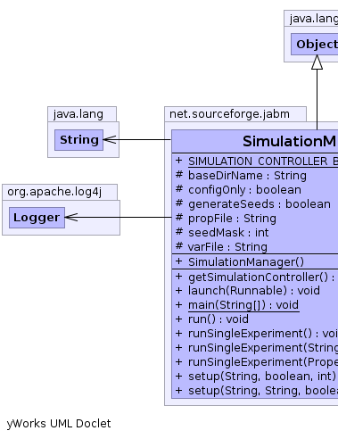
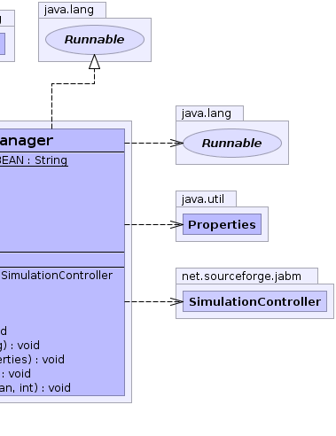

net.sourceforge.jabm.SimulationManager
net.sourceforge.jabm.SimulationManager
|
|||||||||
| PREV CLASS NEXT CLASS | FRAMES NO FRAMES | ||||||||
| SUMMARY: NESTED | FIELD | CONSTR | METHOD | DETAIL: FIELD | CONSTR | METHOD | ||||||||
java.lang.Object
public class SimulationManager
The main application class for JABM experiments when running in headless mode,
e.g. on a cluster (to run using a GUI see DesktopSimulationManager).
Example usage:
java -ea -server
-Djabm.config=config/elfarolbar.xml net.sourceforge.jabm.SimulationManager
System parameters:
jabm.config | The name of the Spring configuration file defining the simulation model |
jabm.propertyfile | The name of a properties file which overrides the values specified in the beans configuration |
jabm.varfile | The name of a properties file which specifies the ranges of independent variables to be used for a multiple treatment factor experiment | jabm.configonly | If set to true in combintation with jabm.varfile then create experiment property files without running any simulations. This is useful for running experiments on clusters. |
DesktopSimulationManager|  |  |
| Field Summary | |
|---|---|
protected java.lang.String |
baseDirName
The (optional) base directory in which subdirectories will be created for experiments involving paramater sweeps. |
protected boolean |
configOnly
If this option is set, then the simulation manager will create configuration files for experiments without actually running them. |
protected boolean |
generateSeeds
|
protected java.lang.String |
propFile
The file name of the .properties file to use for the experiment(s). |
protected int |
seedMask
|
static java.lang.String |
SIMULATION_CONTROLLER_BEAN
The name of the spring bean representing the SimulationController which will be used to run the experiments. |
protected java.lang.String |
varFile
The (optional) file name of the variables file. |
| Constructor Summary | |
|---|---|
SimulationManager()
|
|
| Method Summary | |
|---|---|
SimulationController |
getSimulationController()
|
void |
launch(java.lang.Runnable controller)
|
static void |
main(java.lang.String[] args)
|
void |
run()
|
void |
runSingleExperiment()
|
void |
runSingleExperiment(java.util.Properties properties)
|
void |
runSingleExperiment(java.lang.String propFile)
|
void |
setup(java.lang.String baseDirName,
boolean generateSeeds,
int seedMask)
|
void |
setup(java.lang.String varFile,
java.lang.String baseDirName,
boolean generateSeeds,
int seedMask)
|
| Methods inherited from class java.lang.Object |
|---|
clone, equals, finalize, getClass, hashCode, notify, notifyAll, toString, wait, wait, wait |
| Field Detail |
|---|
protected java.lang.String propFile
protected java.lang.String varFile
protected java.lang.String baseDirName
protected boolean configOnly
protected boolean generateSeeds
protected int seedMask
public static final java.lang.String SIMULATION_CONTROLLER_BEAN
| Constructor Detail |
|---|
public SimulationManager()
| Method Detail |
|---|
public void run()
run in interface java.lang.Runnablepublic void launch(java.lang.Runnable controller)
public SimulationController getSimulationController()
public void runSingleExperiment()
public void runSingleExperiment(java.util.Properties properties)
public void runSingleExperiment(java.lang.String propFile)
public void setup(java.lang.String baseDirName,
boolean generateSeeds,
int seedMask)
public void setup(java.lang.String varFile,
java.lang.String baseDirName,
boolean generateSeeds,
int seedMask)
public static void main(java.lang.String[] args)
|
|||||||||
| PREV CLASS NEXT CLASS | FRAMES NO FRAMES | ||||||||
| SUMMARY: NESTED | FIELD | CONSTR | METHOD | DETAIL: FIELD | CONSTR | METHOD | ||||||||